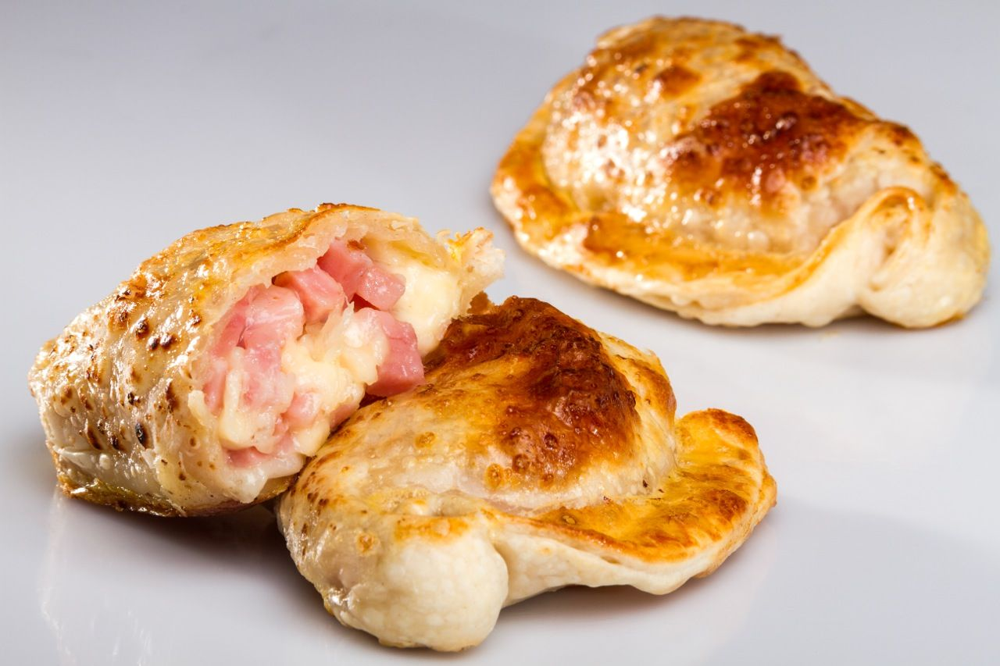
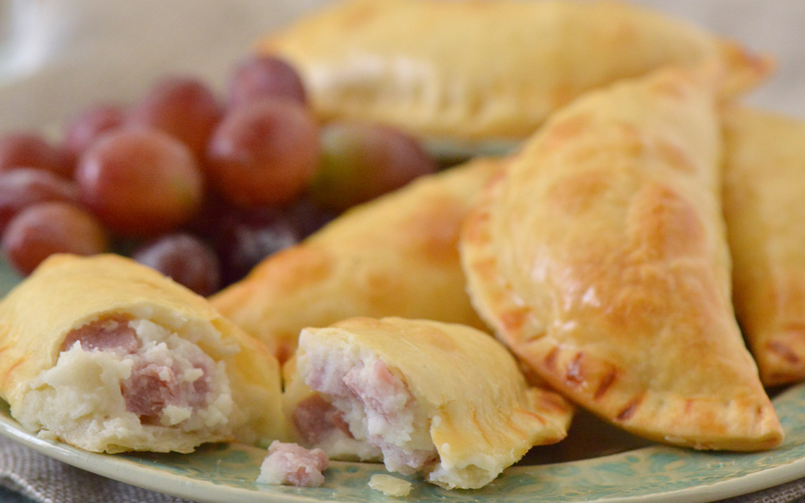

Empanada de Jamon y queso
-Ingredientes para el relleno:
- -Jamón cocido, picado
- -Queso (puede ser queso fresco, queso blanco, queso crema, o una mezcla de quesos)
- -Opcional: huevo duro, picado
- -Opcional: aceitunas verdes o negras, picadas
- -Sal y pimienta al gusto
-Ingredientes para la masa:
- -harina de trigo
- -mantequilla
- -agua
- -sal
Preparación de la empanada
Preparación del relleno
- -Mezclar jamón picado con queso.
- -Opcionales: agregar huevo duro y aceitunas al relleno.
Preparación de la Masa:
- -Mezclar harina de trigo con manteca y agregar agua y sal hasta obtener una masa homogénea.
- -Dejar reposar la masa en la nevera.
Armar las Empanadas:
- -Estirar la masa y cortar círculos.
- -Colocar una porción de relleno de jamon y queso en el centro de cada círculo.
- -Doble la masa formando una media luna y sellar los bordes con un tenedor.
Cocción:
- -Hornear las empanadas hasta que estén doradas.